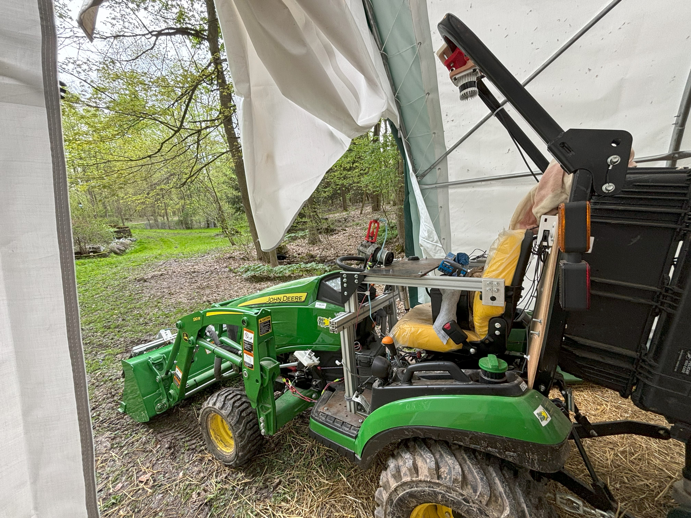
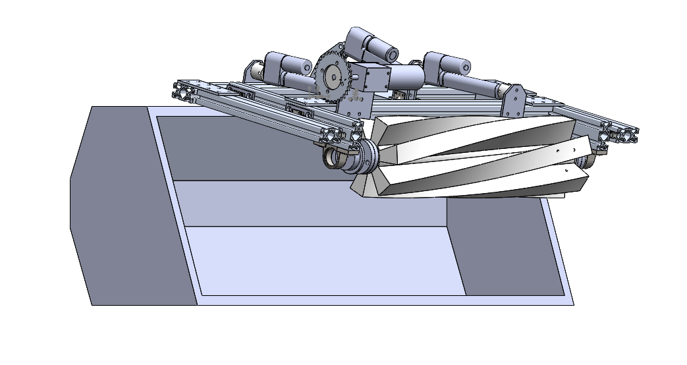
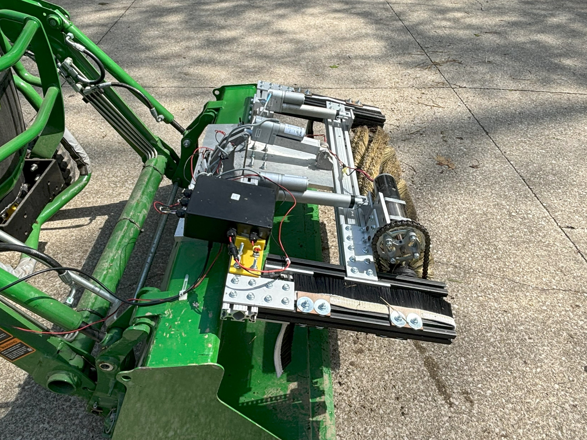
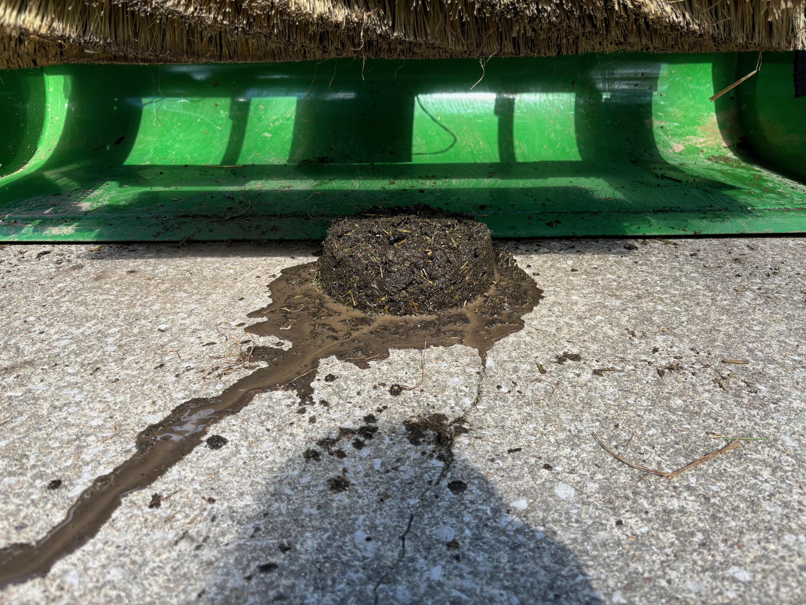
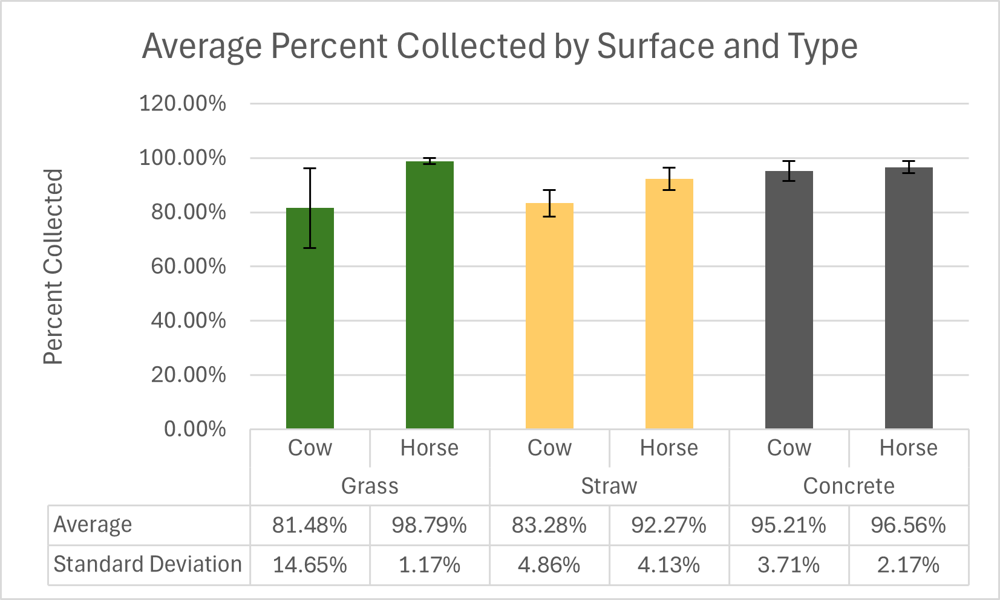

Background
- Manure deposition from livestock grazing poses a signifigant threat to water supplies.
- This risk limits the number of animals that can be graze in a single pasture.
- The goal of the Greener Pasture Research Project is to automate the removal of manure from pastures to increase effeciency of livestock agriculture.
- To accomplish this, collaborators retrofitted a John Deere 1025R subcompact tractor to drive autonomously
- My Objective was to develop a manure collection system for the robot that is electrically powered and mounts directly to the bucket of the front end loader attchment

Design

- My design uses a rotating cylindrical brush to sweep manure into the tractor's bucket off of the ground.
- The manipulator is attached the thre tractor with a hinge at the top of the frame, the angle of the frame is controlled by a linear actuator.
- The brush itself is mounted to a subframe that is attached to the frame on slides, this subframe is positioned with another linear actuator.
- Positioning the brush with two active degrees of freedom allows for more flexibility in positioning the robot relative to the collection target.
- The primary collection strategy is start with the brush on the opposite side of the manure pile and to sweep backwards towards the bucket while the brush is spinning.
- A test run of the system is shown on the left.

- Both frames are constructed from extruded aluminum T-slot framing to allow for for easy modifications to the design.
- The Mounting positions for the linear actuator were designed to achive the desired range of motion and were manufactured using a combination of traditional and CNC techniques.
- Because the robot operates outdoors, all of the major components are made from corrosion resistant materials: Aluminum, Stainless steel, POM.
Testing
- The manipulator's performance was tested across three different surfaces: Grass, Straw and Concrete.
- The tests were complted using a mixture of water, potting soil, alfalfa nad flour designed to emulate real manure.
- Two different formulae for the faux manure mixture were created: one closer to cow manure and one closer to horse manure.


- For each trial, a simulated cow patty was formed by filling a mold with faux manure and place infront of the robot.
- The autonomous collection sequence was ran and the percentage of manure collected was calculated form the initial and final mass of faux manrue.
- On average more than 80% of manure was collected in all trials, on concrete more than 95% was collected on average.
- More details on the design and analysis of results can be found in my thesis: hosted on OhioLINK.